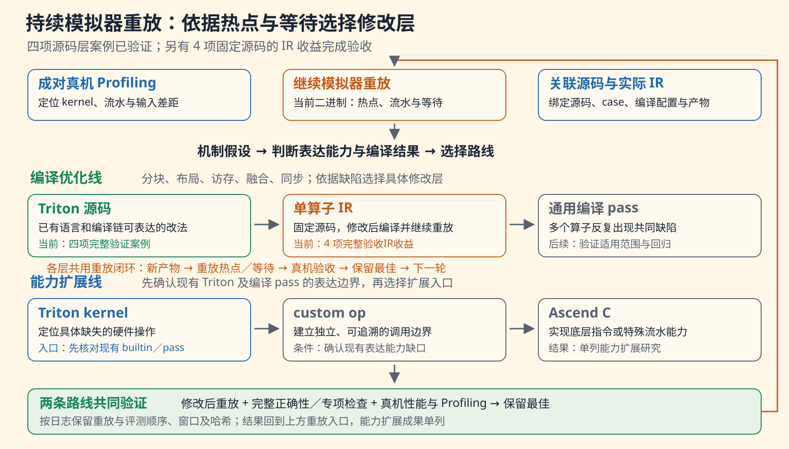

白盒模拟器驱动的多层次优化：以昇腾算子优化为例
GQA最新续接
784.638→472.460μs，目标耗时下降39.79%；固定四项通过，四项耗时几何平均下降19.90%。实际改Triton编译期几何与query行复用，后模拟器已完成。
最新30页PPT · 新连续曲线 · 完整材料与最佳源码
继续模拟器重放 → 定位热点与等待 → 选择Triton／IR修改层 → 编译新产物并再次重放 → 真机验收 → 下一轮
八张图分成两组：四张全用例geomean曲线与四张固定shape机制曲线。均从原生FlagGems开始，实线连续连接完整合格的最佳成绩；失败、退步与复测保留详情。
橙色方法文字与箭头表示模拟器指导；绿色节点形状表示修改位置：圆形设备kernel、方形host、菱形both、三角形IR层。模拟器重放先后指导Triton源码及IR层修改，具体证据与其他贡献保留详情。
当前保留成绩：同时标清两种指标
geomean覆盖完整合同的全部性能用例；固定shape用于讲解具体瓶颈与改法。当前四项中4项已有完整验收的IR新增收益；逐项结果与探索保留详情。
| 算子 | 全用例geomean / CANN | 固定shape / CANN | IR进展 | 完整检查 |
|---|
| BatchNorm | 1.877× | 0.755× | IR统计分块与数值修复已验收；固定shape再降5.25% | 27/27；补测各36/36 |
| upsample_bilinear2d | 1.062× | 1.664× | IR收益已验收 | 24/24；补测各30/30 |
| QKV | 1.673× | 1.469× | IR固定shape新增收益已验收；全合同相对历史基本持平 | 21/21；补测各48/48 |
| scatter_add | 2.268× | 2.765× | IR收益已验收 | 18/18；补测各21/21；专项3/3 |
第一组：四个算子的全用例geomean进展
直接使用26算子主图中这四项的最新数据；从原生出发持续模拟器重放，按问题选择Triton或IR修改层。不同轮次采用共同逐case CANN参考重算，≈表示历史重算；同源码复测与原始配对成绩可展开查看。
BatchNorm · 全用例geomean
IR统计分块与数值修复已验收；固定shape再降5.25%
SVG · PNG · 26算子中的原主图与完整记录 · 对应固定shape与机制
upsample_bilinear2d · 全用例geomean
IR收益已验收
SVG · PNG · 26算子中的原主图与完整记录 · 对应固定shape与机制
QKV · 全用例geomean
IR固定shape新增收益已验收；全合同相对历史基本持平
SVG · PNG · 26算子中的原主图与完整记录 · 对应固定shape与机制
scatter_add · 全用例geomean
IR收益已验收
SVG · PNG · 26算子中的原主图与完整记录 · 对应固定shape与机制
第二组：四张固定shape机制曲线
图中方法箭头沿用真实判断来源；图下逐项列出模拟器观察、其他指导、修改层和真机结果。IR阶段继续重放当前版本，并在修改后重放新二进制；模拟器、profiling、源码／IR及Codex的分析贡献按记录说明。既有案例按日志先完成真机评测，再采集修改后profiling并重放模拟器；图示归纳迭代闭环，各步执行先后以原记录为准。
BatchNorm
FP32 · NCHW [8,64,64,64] · batch_norm_with_update_functional-timing-7
持续重放显示统计同步成本 → 统计8×256与残差均值修复 → 固定shape37.200μs
CANN固定参考耗时：28.068 μs。节点由共同CANN锚点与各版本候选实测耗时换算；≈标记采用共同参考重算的点。
| 模拟器重放与判断依据 | 修改层及改法 | 真机结果与证据范围 |
|---|
| 修改前模拟器循环窗口中Vector等待30.89%，结合成对profiling检查加载与计算节奏。 | Triton源码
提前加载下一块，模型修复循环掩码后完成完整验证。 | 预取步骤71.551→55.622μs；真机每程序Scalar等待减少47.1%，后模拟器窗口Vector等待3.58%。
11月18日该步骤的原始测量；前后模拟器窗口各自归一化。
对应证据 |
继续重放闭环
继续读取当前源码的统计局部重放窗口 → 固定源码加宽输出IR → 编译新二进制 → 真机验收后重放修改版；后窗口完整，33个PC时钟核对通过。
修改前读取与决策 · 修改后二进制重放
修改前统计局部窗口显示同步节奏；Codex结合实际IR、低层产物及统计分块UB超限反馈，提出仅加宽输出。 | 单算子IR
保持Triton源码，归一化／写回分块8×128→8×256，保留原分支。 | 42.955→39.261μs，耗时下降8.60%；完整27/27、双方各36/36、ABBA及后双分析通过。
统计／Welford保持固定；前局部与后完整窗口分别解释，直接PC源码映射待补。
对应证据 |
继续重放闭环
读取保留8×256的热点与流水 → 固定源码新增8×512输出IR → 完整评测、后重放与独立稳定性确认 → 保留机制结果和性能波动，继续采用8×256。
修改前读取与决策 · 修改后二进制重放
沿已保留IR继续重放：统计及输出循环有显式同步与搬运热点，结合真实低层产物选择输出加宽。 | 单算子IR探索
固定源码，新增8×512输出分支，保留8×256／8×128回退。 | 完整27/27、补测各36/36；正式39.458→36.648μs。三轮稳定性检查未通过／通过／未通过，继续保留8×256。
后重放确认输出搬运32→16，前后各33/33个PC时钟匹配。全部过程波动、子进程退出139、时钟标签解释偏差及直接源码映射范围保留。
对应证据 |
继续重放闭环
读取保留版热点与流水 → 加宽输出IR → 完整评测、ABBA及后重放 → 保存稳定性波动与重复预取成本，从保留8×256继续检验新假设。
修改前读取与决策 · 修改后二进制重放
保留版输出循环反复搬运与同步；实际IR末轮仍钳位预取，较大tile增加重复末块读取。 | 单算子IR探索
固定源码新增带守卫8×1024输出分支，统计及256／128回退保持原字节。 | 完整27/27、补测各36/36；正式39.458→33.540μs。ABBA原版36.487／36.537、候选36.429／36.886μs，稳定性未通过，继续保留8×256。
后重放正式二进制一致，31/31个PC时钟匹配，输出搬运32→8；profiling每程序读取268→292KiB。完成清单及2次END可见，子进程139与部分窗口保留；425份完整证据已校验。后续尾步预取检验见下一项。
对应证据 |
继续重放闭环
读取保留版热点、流水及实际低层 → 登记尾步剥离并由模型修改 → 完整真机评测 → 重放新二进制核对读取减少与剩余屏障 → 恢复最佳，继续研究统计分块。
修改前读取与决策 · 修改后二进制重放
保留版统计与输出循环末轮仍重复读取最后一个tile；后端与模拟器保留该搬运，上一轮输出加宽还增加重复读取量。 | 单算子IR探索
固定分块、Welford算术与归约分组，剥离三条循环尾步，删除未消费的末轮预取。 | 完整27/27、双方36/36；目标39.397766μs，继续保留历史39.261332μs最佳，按目标收益筛选未运行ABBA。
读取268→256KiB／程序兑现，向量屏障仍484次；后重放正式二进制一致，35/36个PC时钟匹配，剩余MTE2 MOV_SPR_XN为trace0.124／CSV0.150μs。局部偏差、部分窗口及child139保留，417份完整证据已校验。
对应证据 |
继续重放闭环
读取保留版双分析及低层产物 → 模型修改统计IR → 完整评测和冻结数值诊断 → 重放新二进制 → 保存性能机制及数值回归，由模型继续修复。
修改前读取与决策 · 修改后二进制重放
尾步剥离后屏障484次仍保留；统计分组改为8×256以减少递推轮次。 | 单算子IR探索
固定Triton源码，加宽统计分块并在分支内完成归约，合流三个标量；输出分块保持原值。 | 完整27/27、双方各36/36及ABBA通过，目标36.136μs；冻结25项数值诊断出现原版通过的新增超差，保留39.261μs原最佳。
原／改均19/25；空间维256偏移128处新增74/16384个输出超差，五项4096偏移失败为共有边界。后重放38/38个PC时钟匹配，读取268→272KiB／程序；部分窗口和child139保留。
对应证据 |
继续重放闭环
读取统计256探索版双分析及数值反馈 → 模型登记残差修复IR → 固定合同与既有诊断 → 重放正式新二进制 → 保留37.200μs最佳；两次实际修改父链留在详情。
修改前读取与决策 · 修改后二进制重放
持续重放显示统计同步成本；统计256探索版减少递推，但冻结诊断发现均值舍入被归一化放大的新增回归。 | 单算子IR
统计分块8×128→8×256；模型修复为数据原点＋残差均值归约和宽分支归一化，窄分支保留。 | 历史合格39.261→37.200μs，下降5.25%；完整27/27、双方各36/36；冻结诊断原19/25→新23/25，新增回归0。
后重放BAR484→304、DIV82→50；相对ir010新增减法主要生成VADDS。时钟40/41个PC匹配，剩余MTE2 MOV_SPR_XN约5%边界偏差、部分窗口及child139保留。两项继承窄分支数值边界继续明示，ABBA按条件策略跳过。
对应证据 |
BatchNorm参考包含FP32状态兼容处理，具体调用链保留于成对采集记录。
预取步骤：71.551→55.622 μs；真机每程序Scalar等待减少47.1%。模拟器部分窗口Vector等待30.89%→3.58%，窗口分别归一化。
热点与流水交互演示
全部测量、筛选映射与源码
| 版本 | 候选耗时μs | 相对CANN | 源码SHA |
|---|
| FlagGems | 81.775 | 0.3432× | 2beb154360c8 |
| 复测V1 | 81.437 | 0.3447× | ca3ff529fa06 |
| 复测V2 | 87.733 | 0.3199× | dbf938228eed |
| 复测V3 | 54.847 | 0.5117× | 2b069e41834e |
| 复测V4 | 48.775 | 0.5755× | b8d4d4a2c07d |
| 同源码原IR复测 | 42.955 | 0.6534× | b8d4d4a2c07d |
| IR性能续接 ir-004 | 39.261 | 0.7149× | b8d4d4a2c07d |
| 同源码保留IR复测 | 39.458 | 0.7113× | b8d4d4a2c07d |
| IR性能续接 ir-011 | 37.200 | 0.7545× | b8d4d4a2c07d |
固定输入、profiler计时；最新合格版本的逐case CANN参考耗时为共同锚点。各版本以实测候选耗时换算；原始逐轮成绩、失败和源码接续保留于完整记录。
SVG · PNG · 全合同主图与完整记录
upsample_bilinear2d
FP16 · [4,32,128,128] → [4,32,256,256] · upsample_bilinear2d-timing-1
源码打包写回 → IR缩窄边界选择 → 继续重放后删除无效lane填充值 → 固定shape继续提速
CANN固定参考耗时：243.742 μs。节点由共同CANN锚点与各版本候选实测耗时换算；≈标记采用共同参考重算的点。
| 模拟器重放与判断依据 | 修改层及改法 | 真机结果与证据范围 |
|---|
| Profiling显示向量开销较高；模拟器热点关联交织写回，实际IR保留join／reshape组织。 | Triton源码
模型将两个FP16结果打包写回，并根据数值失败反馈增加低16位掩码。 | 309.716→165.744μs；后采每程序Vector时间8.44→3.20μs，完整24/24与双方各30/30通过。
11月18日源码续接阶段；打包失败及模型修复保留原记录。
对应证据 |
继续重放闭环
继续读取当前最佳的向量热点与流水重放 → 固定源码修改边界选择IR → 编译新二进制 → 真机验收后重放修改版；后部分窗口19/19个PC时钟核对通过。
修改前读取与决策 · 修改后二进制重放
模型读取向量热点、流水及实际低层产物；Codex建议检查打包与布局，模型选定边界选择的位宽。 | 单算子IR
六个边界选择前移到精确FP16→FP32扩展之前，插值算术与访存掩码保持固定。 | 164.856→159.570μs，耗时下降3.21%；完整24/24、双方各30/30、ABBA及后双分析通过。
实际BCMLIR确认select和切片缩窄；后模拟器为部分窗口，直接PC源码映射待补。
对应证据 |
继续重放闭环
继续读取已保留IR的热点与流水 → 固定源码删除无效填充值 → 编译并完整评测、ABBA → 重放正式新二进制；核对PAD仍保留及30/30个PC时钟。
修改前读取与决策 · 修改后二进制重放
当前保留IR重放含行复制、PAD编程及向量等待；实际BCMLIR保留无效lane填充值引入的填充、选择及切片。 | 单算子IR
固定Triton源码，删除9个masked load的other=0和死常量；指针、mask、FP32算术、FP16边界选择及写回保持固定。 | 159.229→146.503μs，下降7.99%；完整24/24、双方各30/30及ABBA通过。实际fill3→1、条件区域2→0、slice7→3；每程序Vector时间3.005→2.634μs。
修改后重放二进制与正式评测一致，30/30个PC时钟通过；超时退出留下部分窗口。PAD编程仍执行，原预测偏差保留，前后窗口分别归一化。
对应证据 |
全部测量、筛选映射与源码
| 版本 | 候选耗时μs | 相对CANN | 源码SHA |
|---|
| FlagGems | 未通过 | 无性能数值 | 62a02c203a3e |
| V1 | 1231.374 | 0.1979× | ff8ebf5847e5 |
| V2 | 309.226 | 0.7882× | 6e7fed2de3d7 |
| V3 | 4323.741 | 0.0564× | bba25c950c37 |
| V4 | 165.744 | 1.4706× | a0e1e0d68717 |
| 同源码原IR复测 | 164.856 | 1.4785× | a0e1e0d68717 |
| IR性能续接 ir-003 | 159.570 | 1.5275× | a0e1e0d68717 |
| 同源码保留IR复测 | 159.229 | 1.5308× | a0e1e0d68717 |
| IR性能续接 ir-001 | 146.503 | 1.6637× | a0e1e0d68717 |
固定输入、profiler计时；最新合格版本的逐case CANN参考耗时为共同锚点。各版本以实测候选耗时换算；原始逐轮成绩、失败和源码接续保留于完整记录。
SVG · PNG · 全合同主图与完整记录
QKV
FP16 · [8,512,3072] · 16 heads · transform_bias_rescale_qkv-timing-2
标量热点指导源码分块 → 持续重放后固定源码重排双头读取与逐头写回 → 固定shape继续提速
CANN固定参考耗时：91.131 μs。节点由共同CANN锚点与各版本候选实测耗时换算；≈标记采用共同参考重算的点。
| 模拟器重放与判断依据 | 修改层及改法 | 真机结果与证据范围 |
|---|
| 原生模拟器将热点定位到标量除模；后续结合当前热点、流水及profiling中的程序数量选择分块。 | Triton源码
二维仿射分块、扩大分块，再调整两段循环的流水；模型保留Q的FP32中间精度。 | 固定shape保留最佳62.837μs；完整21/21、双方各48/48，小幅末轮改善经同源码完整复测确认方向。
原生流水占比为事后补分析；各源码步骤的修改前证据和修复分别保留。
对应证据 |
继续重放闭环
继续依据当前最佳的热点、等待及实际IR选择实验 → 分别编译ir-007／ir-008 → 完整评测后继续模拟器重放；两项保留为无新增收益探索。
修改前读取与决策 · 修改后二进制重放
实际BCMLIR保留循环内bias广播和scale填充；另检查两次64×64读写及等待。 | 单算子IR探索
分别尝试循环不变量外提、合成128×64直线分块。 | 63.038／63.666μs，均完整21/21、双方各48/48通过；保留本轮原IR62.861μs，历史源码最佳62.837μs继续保存。
两项完整合格但暂无收益，放入探索详情；主线继续采用保留最佳。
对应证据 |
继续重放闭环
原IR完整复测及新双采集 → 模型修改KVQ调度IR → 完整验收及新二进制重放 → 目标耗时变慢，保留原IR。
修改前读取与决策 · 修改后二进制重放
读取新一轮原IR热点、流水与实际低层产物，检验K／V先写出能否改善重叠；同时确认目标特化没有masked load。 | 单算子IR探索
保持操作、精度与输入先读后写顺序，将实际输出materialize由QKV调整为KVQ。 | 完整21/21、补测各48/48；63.258→63.652μs，继续保留原IR。
后重放24/24个PC时钟匹配，部分窗口和超时退出9保留。独立profiling中MTE2时间减少，MTE3与Scalar时间增加、AIV时间上升。额外补测AST单列。
对应证据 |
继续重放闭环
继续读取当前原IR热点、流水及低层 → 固定源码重排双头读取与逐头写回 → 完整真机合同及ABBA → 重放正式新二进制，核对收益与新增成本。
修改前读取与决策 · 修改后二进制重放
当前热点与流水显示读写搬运及等待成本；结合实际低层检查两个64×64读取的输入连续性与输出布局。 | 单算子IR
固定源码改为32×128双头读取，reshape／transpose后按head写回；512程序及精度顺序保持固定。 | 完整21/21、双方各48/48及ABBA通过；固定shape历史62.837→62.050μs，下降1.25%。新共同CANN锚点下全合同历史1.672449→1.672510×，基本持平。
正式二进制一致，后重放26/26个PC时钟匹配；部分窗口及超时9保留。MTE2／MTE3时间下降，向量时间、bias读取与写命令增加。历史原始geomean1.679409冻结；额外15个补测AST比较来源单列。472份完整证据已校验。
对应证据 |
全部测量、筛选映射与源码
| 版本 | 候选耗时μs | 相对CANN | 源码SHA |
|---|
| FlagGems | 56626.158 | 0.0016× | 0dd84ef70edf |
| 第1轮 | 79.361 | 1.1483× | a5afde4c8316 |
| 第2轮 | 63.514 | 1.4348× | c133a5a391de |
| 第3轮 | 305.028 | 0.2988× | ce4d1a36e7ce |
| 第4轮 | 62.837 | 1.4503× | 0af5d533afea |
| 同源码保留IR复测 | 63.258 | 1.4406× | 0af5d533afea |
| IR性能续接 ir-002 | 62.050 | 1.4687× | 0af5d533afea |
固定输入、profiler计时；最新合格版本的逐case CANN参考耗时为共同锚点。各版本以实测候选耗时换算；原始逐轮成绩、失败和源码接续保留于完整记录。
SVG · PNG · 全合同主图与完整记录
scatter_add
FP32 · [2048,2048] · dim=-1 · scatter_add-timing-8
源码精简二分写回 → IR折叠尾步 → 继续重放后将统一索引改为标量探测 → 完整调用继续提速
CANN固定参考耗时：3436.888 μs。节点由共同CANN锚点与各版本候选实测耗时换算；≈标记采用共同参考重算的点。
| 模拟器重放与判断依据 | 修改层及改法 | 真机结果与证据范围 |
|---|
| 模拟器解释历史扫描退步；源码续接阶段直接采集排序kernel，写回改法另有profiling和IR依据。 | Triton源码
模型精简写回索引、掩码和类型转换，保留二分中点上界钳制。 | 1.400813→1.282337ms；完整18/18、双方各21/21、分段独立性3/3通过。
排序kernel的模拟器与写回kernel的直接指导分别记录；收益使用完整调用评测。
对应证据 |
继续重放闭环
真机保存中间输入，隔离重放当前sort_out → 固定源码折叠IR二分尾步 → 编译新二进制 → 真机验收后重放修改版；前后部分窗口分别152/152及79/79个PC时钟通过。
修改前读取与决策 · 修改后二进制重放
单独回放sort_out，模拟器显示Vector有效工作88.76%、VGATHER累计指令时间最高；Codex验证全部2049种插入秩的尾步等价。 | 单算子IR
模型用首key比较保留秩0／1必要信息，generic gather14→13；冻结Triton源码。 | 1.281927→1.262722ms，耗时下降1.50%；完整18/18、双方各21/21、专项3/3、ABBA及后双分析通过。
前后均为绑定真机输入与二进制的部分窗口；时钟152/152及79/79通过，直接PC源码映射待补。
对应证据 |
继续重放闭环
继续读取已保留sort_out的热点与流水 → 固定源码统一首两轮探测 → 完整评测与ABBA → 真机保存中间输入，隔离回放正式新二进制；新窗口可见11处gather PC，82/82个PC时钟核对通过。
修改前读取与决策 · 修改后二进制重放
保留版隔离重放显示Vector及VGATHER成本，结合实际IR核对首两轮二分索引均匀性。 | 单算子IR
固定源码，将首两轮gather改为三个固定地址标量读取及广播／选择，保留旧尾步折叠。 | 1263.108→1243.041μs，下降1.59%；完整18/18、双方各21/21、分段3/3、ABBA及后双分析通过。generic gather13→11，全部2049插入秩检查通过。
Scalar执行与MTE2成本增加，Vector及Scalar等待下降。后重放绑定真机中间张量、正式二进制及82/82个PC时钟；部分窗口、超时退出和直接源码映射范围保留。
对应证据 |
全部测量、筛选映射与源码
| 版本 | 候选耗时μs | 相对CANN | 源码SHA |
|---|
| FlagGems | 19882.584 | 0.1729× | e249f5c57930 |
| 复测V1 | 19447.351 | 0.1767× | 7cb10fae0b6d |
| 复测V2 | 未通过 | 无性能数值 | 8a67a004fd75 |
| 复测V3 | 1399.939 | 2.4550× | 72c4d40d831f |
| 复测V4 | 1281.830 | 2.6812× | a27f40a22712 |
| 同源码原IR复测 | 1281.927 | 2.6810× | a27f40a22712 |
| IR性能续接 ir-002 | 1262.722 | 2.7218× | a27f40a22712 |
| 同源码保留IR复测 | 1263.108 | 2.7210× | a27f40a22712 |
| IR性能续接 ir-001 | 1243.041 | 2.7649× | a27f40a22712 |
固定输入、profiler计时；最新合格版本的逐case CANN参考耗时为共同锚点。各版本以实测候选耗时换算；原始逐轮成绩、失败和源码接续保留于完整记录。
SVG · PNG · 全合同主图与完整记录
什么时候考虑修改IR？
模拟器显示当前生成代码存在有成本的热点、重复工作或等待；实际IR与低层产物能定位其形成方式，且存在语义可验证的局部改法。
先绑定当前最佳的case、输入和二进制，再检查热点与流水、确认低层仍保留该成本，登记预计减少的指令／等待／轮次。固定源码修改IR后，重新编译并重放，以完整真机合同及既有补测确认收益；测量出现疑点时再做交错复测。
上采样：宽位选择缩窄；scatter：冗余gather尾步折叠；BatchNorm：减少输出tile轮次。算法与启动意图需重设计时优先改Triton；同类编译缺陷跨多个算子重复后评估通用pass。
选层条件、观察分类与案例
持续模拟器重放闭环 · 更新PPT
当前研究层次与下一步
四项均已有Triton源码层实验；其中4项已补充完整合格的单算子IR收益。模拟器指令和流水用于提出机制假设，实际IR用于检查编译结果，真机评测用于确认收益。IR修改纳入持续模拟器重放：读取当前热点与等待，固定源码修改IR，编译新二进制后再次重放，并结合完整真机验收保留最佳。在重复缺陷出现时评估通用pass；修改、正确性与真实收益分别核验。
模型负责候选实现；Codex负责证据分析、调度与核验。模拟器窗口和绝对时钟范围逐项保留。

路线图SVG · 路线图PNG · 组会PowerPoint · 讲稿